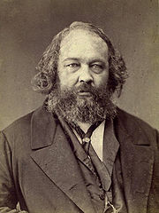

Mikhail Aleksandrovitch Bakunin foi um filósofo e revolucionário anarquista do século XIX.
É considerado uma das figuras mais influentes do anarquismo e um dos principais fundadores da tradição social anarquista. O enorme prestígio de Bakunin como ativista o tornou um dos ideólogos mais famosos da Europa e sua influência foi substancial entre os radicais da Rússia e da Europa.
Fonte: Link para wikipedia